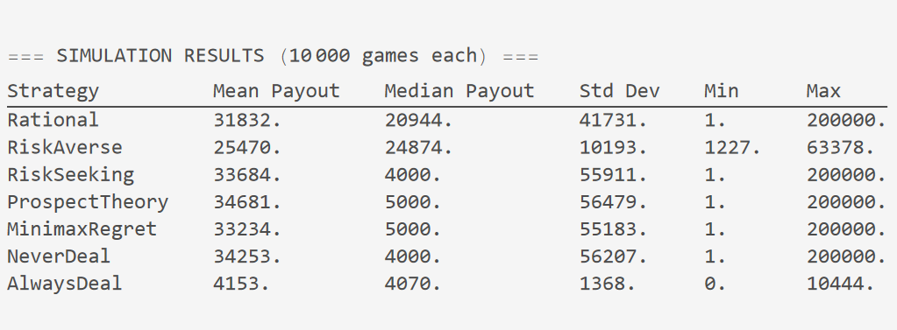
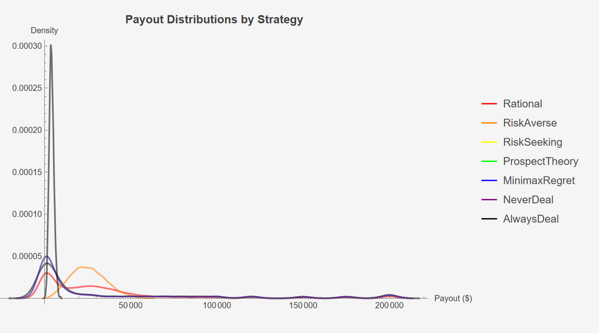
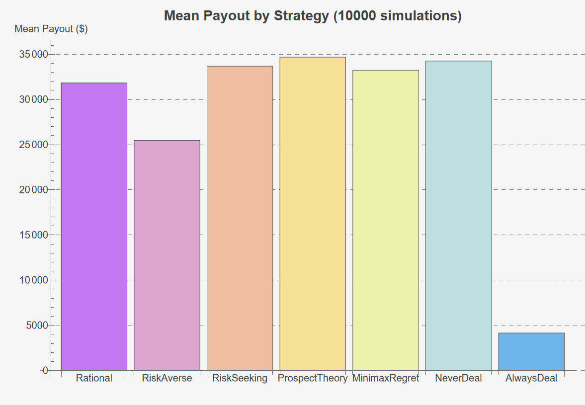
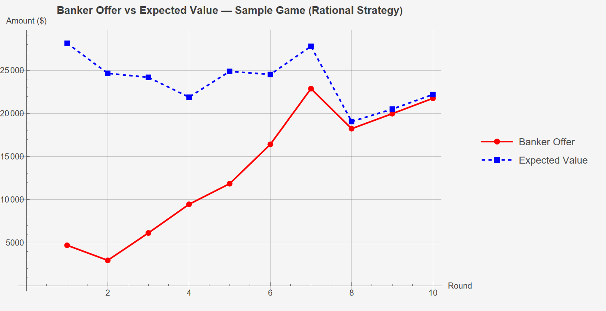
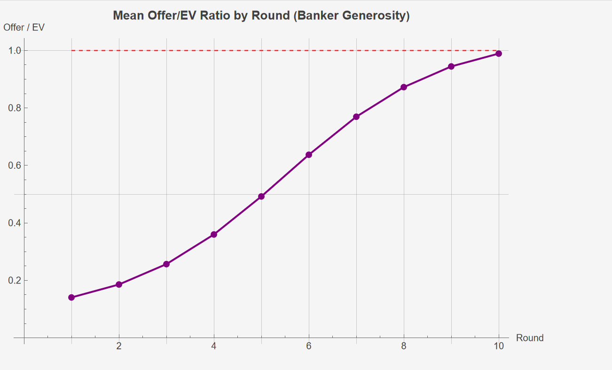

Australian Deal or No Deal
I used Claude to create a simulation of Australian Deal or No Deal for different strategies.
| Strategy Name | Details |
|---|---|
| Rational / Expected Value -Maximising Strategy | Accept if offer >= current expected value . A risk-neutral agent should be indifferent at EV; we accept at or above it to prefer certainty when the offer is fair . |
| Risk-Averse Strategy | Accept if offer >= threshold fraction of EV . averseFraction less than 1 means the player will happily take less than EV to lock in a sure thing . Models loss aversion . |
| Risk-Seeking / Greedy Strategy | Accept only if offer >= seekerFraction * EV . seekerFraction > 1 means the player demands a premium above EV - they believe luck is on their side . |
| Prospect-Theory Strategy | Inspired by Kahneman-Tversky: people overweight small probabilities of large wins . The player values the remaining pool by a probability-weighted utility: $$U = \Sigma w(p_1) * v(x_1)$$ where $$v(x) = x^\alpha$$ (diminishing sensitivity, $$\alpha < 1$$) $$w(p) = p^\gamma / (p^\gamma + (1-p)^\gamma)^(1/\gamma) $$ (probability weighting) Accept if offer utility >= weighted utility of the pool . |
| Minimax-Regret Strategy | The player minimises maximum regret . Regret from dealing: Regret_deal = max(remaining) - offer Regret from not dealing is the expected miss: Regret_nodeal ~|offer - EV| Accept if regret of dealing $$\leq$$ regret of not dealing . |
| Never Deal Strategy | Player always plays to the end; outcome = player's own case . Baseline for comparison . |
| Always Deal Strategy | Player accepts the very first offer (round 1) . Lower bound benchmark . |




